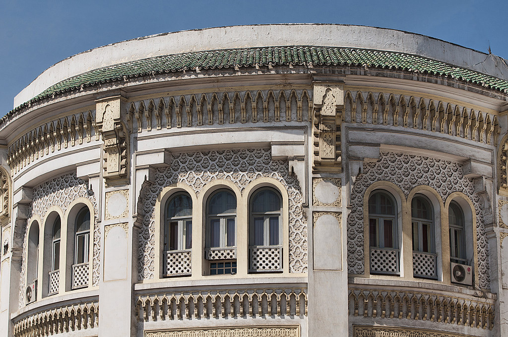
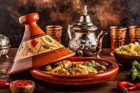

Cultural Highlights of Casablanca
Art and Architecture
Casablanca's art and architecture are marked by a distinctive blend of Moroccan traditions and European influences, particularly from the French Protectorate era. The city is renowned for its Art Deco buildings, reflecting the grandeur of the early 20th century. Prominent examples include the Palais de Justice and the main Post Office. The Hassan II Mosque, a modern marvel of Islamic architecture, is another highlight, known for its intricate designs and the world's tallest minaret. The architecture in Casablanca is a mix of Art Deco, Art Nouveau, neo-Moorish, and neo-Moroccan styles, showcasing a unique blend of modernity and tradition. Efforts are underway by groups like Casamémoire to preserve these historic structures amidst modern development pressures
Cuisine
Casablanca's culinary scene is a delightful blend of Moroccan traditions and international influences. Its cuisine features the iconic Tajine, a rich stew, and Ksra Bread, a traditional staple. The Harira soup offers a flavorful combination of tomatoes, lentils, and meat. Pastilla, a sweet and savory pastry, and fresh Moroccan salads add variety to the menu. The national drink, Mint tea, complements the meal, especially when paired with oriental sweets like fruit-filled cakes. Casablanca's restaurants range from traditional Moroccan to Mediterranean and French cuisines, with a focus on fresh seafood, reflecting its coastal location.